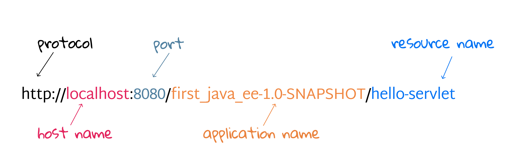

2.1 Servlet And Container
What if you had Java, but no servlets or containers? Well, you can still use Java SE to handle the HTTP request. But, it would require overwhelming efforts. Basically, some key functions you would have to implement in plain old Java on your own if no container existed:
- Create a socket connection with the server, and create a listener for the socket.
- Create a thread manager.
- Implement security.
- Convent a JSP to a Servlet.
- ...
Thanks to the container. You get to concentrate more on your own business logic instead of worrying about writing code for threading, security, and networking.
[!TIP] Tomcat is the container we are using in the textbook.
How the container handles a request
As you have already known, String is a Java class used to manage a sequence of characters; Date is a Java class used to provide the ability to manipulate time; Math is Java class used to extend the capabilities that handle mathematical operations...
What is Servlet essentially? From the point of view of code, a servlet is no exception: it is a Java class that is used to extend the capabilities of servers that host applications accessed by means of a request-response programming model.
[!TIP] A servlet is a small Java program that runs within a Web server[1].
public class HelloServlet extends HttpServlet {
...
public void doGet(HttpServletRequest request, HttpServletResponse response) {
...
}
}
Let's take a closer look at the HelloServlet.java. As the name implies, the doGet() method is to handle the HTTP GET request and then make a response. In the plain old Java code, there must another Java class to create an instance of HelloServlet, HttpServletRequest and HttpServletResponse. Without any doubt, it is the container's responsibility. The pseudo code[2] can be described as following:
// what happens in the container
HelloServlet servlet = new HelloServlet();
HttpServletRequest request = new HttpServletRequest();
HttpServletResponse response = new HttpServletResponse();
servlet.doGet(request, response);
Here's a quick overview about how the container handles a request, and it illustrates what happens behind the scene of Fig.1.12. We assume that the request is an HTTP GET.
- Step 1: User clicks a link that has a URL to a servlet instead of a static page. The clicking behavior would generate an HTTP request sent to the container.
- Step 2: The container "sees" that the request is for a servlet, so the container creates two objects: 1) HttpServletResponse and 2) HttpServletRequest.
- Step 3: The container finds the correct servlet based on the URL in the request, creates or allocates a thread for that request, and passes the request and response objects to the servlet thread[3]. Note that different accesses to the same servlet are isolated threads.
[!TIP] We will revisit the thread related issues in Section 3.1.
- Step 4: The container calls the servlet's
doGet(), which generates a dynamic page and dumps the page into the response object. Remember, the container still has a reference to the response object.

- Step 5: The thread completes, and the container converts the response into an HTTP response, sends it back to the client, then deletes the request and response objects[4].
What makes servlet a servlet
Back to the servlet itself, let's revisit how it looks in code line by line (ch1/HelloServlet.java).
// lines 1-6
package com.swufe.javaee.first_java_ee;
import java.io.*;
import javax.servlet.http.*;
import javax.servlet.annotation.*;
Every Java programmer should know what package and import are: package is to organize Java files into different modules or folders in your file systems, and importing a package allows you to access classes in the package in current Java file. Here java.io.* is the package of Java SE (under java namespace), while the remaining two belong to Jakarta EE (under jakarta namespace).
[!NOTE] In Java EE 8 or below, the namespace is
javax, and it has been changed tojakartasince Jakarta EE 8.
We leave the explanation of line 8 for the next subsection How the container finds the correct servlet.
// line 9
public class HelloServlet extends HttpServlet {
Here we have a Java class named HelloServlet extending jakarta.servlet.http.HttpServlet, so this self-defined class can reuse many methods as well fields from HttpServlet. As we mentioned above, the main purpose of a servlet is to handle requests and then make responses. Although there are other alternative communication protocols (e.g., FTP, SMTP), Jakarta EE only provides supports for HTTP(S) which are the most widely used in web era. As its name implies, HttpServlet is to used to create an HTTP servlet suitable for a Web site.
[!NOTE] 99.999% of all servlets are HttpServlets.
What about the next 0.001%? Well, in rare cases, you can even implement your own servlet to handle other network protocols in addition to HTTP(S). The following is a simple UML class diagram[5] to illustrate the servlet families.

As we can see, Servlet is an interface, and GenericServlet, an abstract class, is protocol-independent servlet. Implementation in UML is a hollow triangle shape on the interface end of the dashed line (----▻). HttpServlet is also an abstract class extending GenericServlet. Inheritance in UML is a hollow triangle shape on the superclass end of the line. It is important to understand the class diagram in a system if you want to have a quick overview in a high level.
// lines 16-24
public void doGet(HttpServletRequest request, HttpServletResponse response) throws IOException { // 16
response.setContentType("text/html"); // 17
String message = "Hello World!"; // 18
// Hello
PrintWriter out = response.getWriter(); // 20
out.println("<html><body>"); // 21
out.println("<h1>" + message + "</h1>"); // 22
out.println("</body></html>"); // 23
}
Slightly different from HelloServlet.java, we move the message variable into doGet() for the ease of explanation. First of all, doGet() is inherited from HttpServlet class, and it is used to handle HTTP GET method. To put it in another way, it is a method overriding, and to make it explicit, it is recommended to add @Override annotation before the method signature. As we discussed before, both request and response are created by the container, and they are interfaces to provide request and response information for HTTP servlets, respectively.
- Line 17:
setContentType()is a method ofHttpServletResponse, specifying the content-type, a.k.a MIME type of a response. You may refer to Section 1.4 if you are lost. - Line 19: Generally speaking, there are two kinds of data types, character text (e.g.,
.html,.txt) and non-plain text (e.g.,.jar,.png), respectively, andgetWrite()method of a response returns aPrinterWriterobject that can send character text to the client. - Lines 21-22: Write some HTML elements into the
PrinterWriter. Different fromSystem.out.println(), which is to display some texts into the standard output[7],println()ofjava.io.PrinterWriteris to display texts into a a text-output stream[8], and you can simply image that a response object wraps a text stream.
After doGet() is called, the container will convert this response object wrapped with contents into a real HTTP response and send it back to the client (i.e., a web browser in our case).
How the container finds the correct servlet
In a real system, there is a large number of servlets. So, a natural question is: how does the container the correct servlet?
Consider you are writing a letter to your friend Bob, which information can help postman deliver your letter to Bob? Well, you may asked to write down Bob's address and name in the envelope. Similarly, the container also needs each servlet's "address" and "name". Recall in the Step 3 of How the container handles a request:
The container finds the correct servlet based on the URL in the request.
The "address" (or "name") of a servlet corresponds to the resource name in a URL that people input in the address bar of a web browser.

In the last subsection, we omit line 8 of HelloServlet.java on purpose.
// line 8
@WebServlet(name = "helloServlet", value = "/hello-servlet")
It is a Java annotation introduced by Jakarta EE, which make it possible to map URLs to servlets[9], and it must be located before the class declaration. The key component of this annotation is value = "/hello-servlet", implying the resource named hello-servlet will be routed to this servlet, while name = "helloServlet is optional, and it does not really make sense in this example. You can also use urlPatterns to specify such mapping:
@WebServlet(urlPatterns = "/hello-servlet")
[!TIP] Both
valueandurlPatternsin@WebServletcan map URLs, andurlPatternsis more powerful. More rules and usages will be covered later in this book.
It is also fine to map several URLs to this servlet by specifying a list of values in value or urlPatterns.
@WebServlet(urlPatterns = {"/a", "/b"})
Then you can access this servlet via either /a or /b. By the way, like variable naming, you should provide meaningful values for servlet, so Since url mapping in the most important information of a servlet, there is a shorthand:
@WebServlet("/c")
Once upon a time: A servlet's name
Before Servlet API 3.0, setting up the URL mappings is a bit overwhelming, and you have to use the deployment descriptor (DD) to tell the container how to run your servlets and JSPs. DD is a fairly simple XML document (src | main | webapp | WEB-INF | web.xml)[10], and annotations can replace equivalent XML configuration in DD such as servlet declaration and servlet mapping.
First of all, let's have glance at the web.xml. Basically, its syntax is similar with HTML as we have studied previously. The default DD is nearly empty, except a root element <web-app>. DD provides a "declarative" mechanism for customizing you web applications without touching source code, and this flexibility is sometimes preferred because any changes of source code will result in extra re-compiling (i.e., converting .java to .class) and re-packaging.
There is no essential difference between annotation and DD in terms of servlet mapping. The main idea is the same: create a connection between a servlet and a URL. When it comes to a servlet, it is a Java class with a fully-qualified name (i.e, package name + class name). For example, HelloServlet's fully-qualified class name in ch2 is com.swufe.javaee.ch2.HelloServlet. Firstly, you have to map an internal name, which is optional in annotations but necessary in DD, to the fully-qualified class name using <servlet> element. Note that internal name is only visible to developers not to end users.
<servlet>
<servlet-name>Some Name</servlet-name>
<servlet-class>com.swufe.javaee.ch2.HelloServlet</servlet-class>
</servlet>
As we can see, <servlet-name> and <servlet-class>, nested inside <servlet>, are used to specify the internal name and fully-qualified name, respectively.
Next, you also have to further map the internal name to URLs using <servlet-mapping> element. The value inside <servlet-name> is what we have defined in <servlet>, and <url-pattern> has the same functionality with the value or urlPatterns in annotations.
<servlet-mapping>
<servlet-name>Some Name</servlet-name>
<url-pattern>/hello-servlet</url-pattern>
</servlet-mapping>
To sum up, there are THREE names of a servlet, and servlet-name is the bridge mapping the servlet to URLs:
- servlet-name: the internal name, which is logical.
- servlet-class: the fully-qualified class name, which is physical.
- url-pattern: the URL name, which is visible to end users.
Clearly, annotations make our lives easier, and they are also widely used in many popular frameworks, including Java's Spring and Python's Flask, so it is recommended to use annotations if possible.
[1] In linguistics, -let often means small. For example, booklet is a small book or group of page; tablet is a small, solid piece of medicine. So servlet, literally, means a small program running in the server.
[2] The pseudo code doesn't really exist in Jakarta EE, and it only serves for the illustration purpose here.
[3] Process means any program is in execution, and thread means segment of a process. Since the servlet may be accessed by thousands of people simultaneously, there are many threads to create servlet instances. Creating threads can be a time consuming task, so many systems would maintain a thread pool, and therefore when a new request comes, an existing thread and instance will be allocated and reused for better performance.
[4] All objects in Java are references, so when passing an object to a function, any changes of the object can be observed by anyone who holds a reference to that object.
[5] Deletions are happened in an inexplicit way, and they are under the control of Java's garbage collection.
[6] UML, short for Unified Model Language, is a general-purpose, developmental, modeling language in the field of software engineering that is intended to provide a standard way to visualize the design of a system. A class diagram in UML is a type of static structure diagram that describes the structure of a system by showing the system's classes, their attributes, operations (or methods), and the relationships among objects. However, the class diagram used in this textbook is a simplified version, not the standard one.
[7] That default destination of the standard output is the display screen on the computer that initiated the program.
[8] I/O and networking operations are often abstracted as streams. Like water flow in a stream, we often emphasize data flow in program which has a destination.
[9] Such mapping from URLs to codes (i.e., methods, classes) is often called routing.
[10] XML, short of Extensible Markup Language, is similar to HTML, but without predefined tags to use. Instead, you define your own tags designed specifically for your needs.